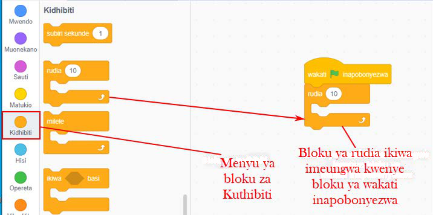
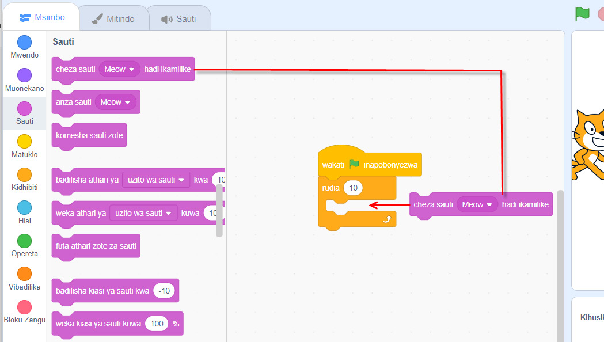
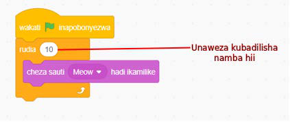

Hatua
1.
Bofya au tumia mishale menyu ya bloku za ‘Matukio’.
2.
Buruta na dondosha bloku ya ‘wakati inapobonyezwa’ kwenye eneo la kuandikia.
3.
Bofya au tumia mishale menyu ya bloku za ‘Kidhibiti’.
4.
Buruta na dondosha bloku ya ‘rudia’ kwenye eneo la kuandikia. Kisha, unganisha kwenye bloku ya ‘wakati inapobonyezwa’ kama inavyooneshwa katika Kielelezo namba 34.

Maelezo ya programu fikivu ya Quorum: Menyu ya bloku za Kidhibiti imefunguliwa. Bloku ya rudia 10 imewekwa ndani ya bloku ya wakati wa kuanza.Kielelezo namba 34: kutumia bloku ya rudia katika mchezo.
5.
Bofya au tumia mishale menyu ya bloku za ‘Sauti’.
6.
Buruta na dondosha bloku ya ‘cheza sauti hadi ikamilike’ ndani ya bloku ya ‘rudia’. Chunguza Kielelezo namba 35 kinachoonesha au kinabainisha namna ya kufanya.

Maelezo ya programu fikivu ya Quorum: Bloku ya cheza sauti hadi ikamilike inaingizwa ndani ya bloku ya rudia. Hivyo sauti ya Meow itachezwa mara kwa mara.Kielelezo namba 35: kuhamisha bloku ya sauti ndani ya bloku ya rudia.
7.
Utapata programu kama inavyooneshwa katika Kielelezo namba 36.

Maelezo ya programu fikivu ya Quorum: Namba 10 kwenye bloku ya rudia inaweza kubadilishwa. Namba hiyo inaonyesha mara ngapi amri itarudiwa.Kielelezo namba 36: programu ya kucheza sauti inayojirudia.
8.
Cheza mchezo huo na uhesabu sauti imesikika mara ngapi.
9.
Badilisha namba kutoka 10 kwenda 15. Cheza sauti hiyo tena na uhesabu sauti hiyo imesikika mara ngapi?